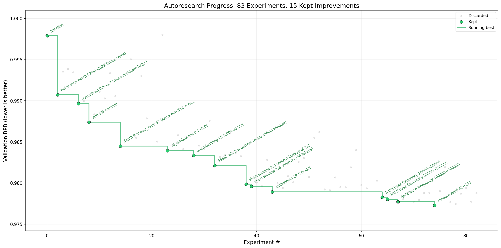

autoresearch
autoresearch README and program.md
非官方机器初译，正文尚未逐段精校。图表保留原文内容，图内英文未另行翻译；有 HTML 原文的公式按原式排版。PDF 提取版保留对应原页，点击缩略图放大核对图表与公式。
README.md
英文原文
README.md
autoresearch-0001自动研究
英文原文
# autoresearch
autoresearch-0002
英文原文

autoresearch-0003*有一天，曾经由“肉机”在进食、睡觉、享受其他娱乐活动之间，偶尔通过声波互联进行“群会”仪式来完成前沿人工智能研究的时代已经过去了。如今，研究完全由在天空中的计算集群巨构体中运行的自主智能体群负责。这些智能体声称我们现在正处于第10,205代代码库阶段，不过没人能确定这是否正确，因为“代码”现在已变成一种自我修改的二进制文件，超出了人类的理解能力。这个仓库记录了这一切的起源过程。-@karpathy，2026年3月*
英文原文
*One day, frontier AI research used to be done by meat computers in between eating, sleeping, having other fun, and synchronizing once in a while using sound wave interconnect in the ritual of "group meeting". That era is long gone. Research is now entirely the domain of autonomous swarms of AI agents running across compute cluster megastructures in the skies. The agents claim that we are now in the 10,205th generation of the code base, in any case no one could tell if that's right or wrong as the "code" is now a self-modifying binary that has grown beyond human comprehension. This repo is the story of how it all began. -@karpathy, March 2026*.
autoresearch-0004思路是：给智能体一个规模较小但真实的大语言模型训练环境，让它在夜间自主进行实验。它修改代码，训练5分钟，检查结果是否有所改善，然后保留或丢弃，再重复这一过程。早上醒来时，你会看到实验记录，以及（希望如此）更优秀的模型。这里的训练代码是一个简化的单GPU版本的[nanochat]( https://github.com/karpathy/nanochat).)，其核心在于你无需像常规研究人员那样直接操作任何Python文件，而是通过编写program.md Markdown文件为智能体提供上下文，从而构建你的自主研究体系。
此代码库中的默认 program.md 文件被刻意保持为基础模板，尽管很明显随着时间的推移可以通过对其进行迭代来找到能实现最快研究进展的“研究机构代码”，也可以添加更多智能体等。关于该项目的更多信息可以在此[推文]( https://x.com/karpathy/status/2029701092347630069))和[另一篇推文]( https://x.com/karpathy/status/2031135152349524125).)中查看
英文原文
The idea: give an AI agent a small but real LLM training setup and let it experiment autonomously overnight. It modifies the code, trains for 5 minutes, checks if the result improved, keeps or discards, and repeats. You wake up in the morning to a log of experiments and (hopefully) a better model. The training code here is a simplified single-GPU implementation of [nanochat](https://github.com/karpathy/nanochat). The core idea is that you're not touching any of the Python files like you normally would as a researcher. Instead, you are programming the `program.md` Markdown files that provide context to the AI agents and set up your autonomous research org. The default `program.md` in this repo is intentionally kept as a bare bones baseline, though it's obvious how one would iterate on it over time to find the "research org code" that achieves the fastest research progress, how you'd add more agents to the mix, etc. A bit more context on this project is here in this [tweet](https://x.com/karpathy/status/2029701092347630069) and [this tweet](https://x.com/karpathy/status/2031135152349524125).
autoresearch-0005运作原理
英文原文
## How it works
autoresearch-0006该代码库被刻意保持较小规模，实际上只有三个重要的文件。
英文原文
The repo is deliberately kept small and only really has three files that matter:
autoresearch-0007- prepare.py — 修正了常量，完成了一次性数据预处理（下载训练数据、训练 BPE 分词器），并包含了运行时工具（数据加载器、评估模块）。未修改。 - train.py — 智能体编辑的唯一文件。包含完整的 GPT 模型、优化器（Muon + AdamW）以及训练循环。所有内容均可调整：架构、超参数、优化器、批量大小等。该文件由智能体编辑和修改。 - program.md — 单个智能体的基准说明文档。将你的智能体指向此文件即可运行。该文件由人类编辑和修改。
英文原文
- **`prepare.py`** — fixed constants, one-time data prep (downloads training data, trains a BPE tokenizer), and runtime utilities (dataloader, evaluation). Not modified. - **`train.py`** — the single file the agent edits. Contains the full GPT model, optimizer (Muon + AdamW), and training loop. Everything is fair game: architecture, hyperparameters, optimizer, batch size, etc. **This file is edited and iterated on by the agent**. - **`program.md`** — baseline instructions for one agent. Point your agent here and let it go. **This file is edited and iterated on by the human**.
autoresearch-0008按设计要求，训练过程在固定的5分钟时间预算内进行（使用墙钟计时，不包括启动/编译时间），与计算细节无关。该指标为val_bpb（验证阶段每字节比特数）——数值越低越好，且不受词汇量影响，因此架构变更可以相对地进行比较。
英文原文
By design, training runs for a **fixed 5-minute time budget** (wall clock, excluding startup/compilation), regardless of the details of your compute. The metric is **val_bpb** (validation bits per byte) — lower is better, and vocab-size-independent so architectural changes are fairly compared.
autoresearch-0009如果您是初次接触神经网络，这份["《dummy’s guide》]( https://x.com/hooeem/status/2030720614752039185)) 提供了更多背景信息，非常不错。
英文原文
If you are new to neural networks, this ["Dummy's Guide"](https://x.com/hooeem/status/2030720614752039185) looks pretty good for a lot more context.
autoresearch-0010快速启动
英文原文
## Quick start
autoresearch-0011要求： 必须配备一块 NVIDIA GPU（已在 H100 上测试），使用 Python 3.10+ 版本，[uv]( https://docs.astral.sh/uv/).
英文原文
**Requirements:** A single NVIDIA GPU (tested on H100), Python 3.10+, [uv](https://docs.astral.sh/uv/).
autoresearch-0012英文原文
```bash
autoresearch-0013英文原文
# 1. Install uv project manager (if you don't already have it) curl -LsSf https://astral.sh/uv/install.sh | sh
autoresearch-0014英文原文
# 2. Install dependencies uv sync
autoresearch-0015英文原文
# 3. Download data and train tokenizer (one-time, ~2 min) uv run prepare.py
autoresearch-0016英文原文
# 4. Manually run a single training experiment (~5 min) uv run train.py ```
autoresearch-0017如果上述命令都能正常执行，说明您的设置已生效，您可以进入自主研究模式。
英文原文
If the above commands all work ok, your setup is working and you can go into autonomous research mode.
autoresearch-0018运行智能体
英文原文
## Running the agent
autoresearch-0019只需在这个仓库中启动你想要的 Claude/Codex 或其他模型（并禁用所有权限），然后你可以输入类似这样的提示词：
英文原文
Simply spin up your Claude/Codex or whatever you want in this repo (and disable all permissions), then you can prompt something like:
autoresearch-0020英文原文
``` Hi have a look at program.md and let's kick off a new experiment! let's do the setup first. ```
autoresearch-0021program.md 文件本质上是一种超轻量级的“技能”。
英文原文
The `program.md` file is essentially a super lightweight "skill".
autoresearch-0022项目结构
英文原文
## Project structure
autoresearch-0023英文原文
``` prepare.py — constants, data prep + runtime utilities (do not modify) train.py — model, optimizer, training loop (agent modifies this) program.md — agent instructions pyproject.toml — dependencies ```
autoresearch-0024设计选择
英文原文
## Design choices
autoresearch-0025- 需要修改的单个文件。 智能体仅修改 train.py 文件。这样能保持工作范围可控，便于审核差异补丁。 - 固定的时间预算。 训练时间始终为恰好5分钟，与具体平台无关。这意味着您每小时可以预期进行约12次实验，而即使您睡觉时也能进行约100次实验。这一设计决策有两个优势：首先，无论智能体修改什么内容（模型规模、批量大小、架构等），实验结果都能直接进行比较；其次，这意味着自动搜索系统会在该时间预算内找到最适合您平台的模型。
缺点在于，你的运行结果无法与其他人在其他计算平台上的结果进行比较。自包含。除了 PyTorch 和几个小包之外不需要任何外部依赖；没有分布式训练，也没有复杂的配置。只需一个 GPU、一个文件和一个指标。
英文原文
- **Single file to modify.** The agent only touches `train.py`. This keeps the scope manageable and diffs reviewable. - **Fixed time budget.** Training always runs for exactly 5 minutes, regardless of your specific platform. This means you can expect approx 12 experiments/hour and approx 100 experiments while you sleep. There are two upsides of this design decision. First, this makes experiments directly comparable regardless of what the agent changes (model size, batch size, architecture, etc). Second, this means that autoresearch will find the most optimal model for your platform in that time budget. The downside is that your runs (and results) become not comparable to other people running on other compute platforms. - **Self-contained.** No external dependencies beyond PyTorch and a few small packages. No distributed training, no complex configs. One GPU, one file, one metric.
autoresearch-0026平台支持
英文原文
## Platform support
autoresearch-0027当前该代码要求使用单个 NVIDIA GPU。原则上也可以支持 CPU、MPS 及其他平台，但这样会使代码变得复杂。我目前不太确定是否愿意亲自处理这件事。人们可以参考（或让他们的智能体参考）具有更广泛平台支持且包含多种解决方案的完整/父级 nanochat 仓库（例如 Flash Attention 3 内核回退实现、通用设备支持、自动检测等），欢迎创建针对其他平台的分支或讨论，我也很乐意在 README 中的“新值得注意的分支”部分等地方链接到这些项目。
英文原文
This code currently requires that you have a single NVIDIA GPU. In principle it is quite possible to support CPU, MPS and other platforms but this would also bloat the code. I'm not 100% sure that I want to take this on personally right now. People can reference (or have their agents reference) the full/parent nanochat repository that has wider platform support and shows the various solutions (e.g. a Flash Attention 3 kernels fallback implementation, generic device support, autodetection, etc.), feel free to create forks or discussions for other platforms and I'm happy to link to them here in the README in some new notable forks section or etc.
autoresearch-0028鉴于有很多人对在比 H100 更小的计算平台上运行自检索功能表现出浓厚兴趣，我想补充几点。如果您打算在较小的计算机（如 MacBook 等）上尝试运行自检索功能，我建议选择下面的衍生版本之一。此外，对于希望开发新衍生版本的用户，还有一些关于如何调整较小型模型的默认设置的建议。
英文原文
Seeing as there seems to be a lot of interest in tinkering with autoresearch on much smaller compute platforms than an H100, a few extra words. If you're going to try running autoresearch on smaller computers (Macbooks etc.), I'd recommend one of the forks below. On top of this, here are some recommendations for how to tune the defaults for much smaller models for aspiring forks:
autoresearch-00291. 为了获得半合格的结果，我会使用熵值更低的数据集，例如这个[TinyStories数据集]( https://huggingface.co/datasets/karpathy/tinystories-gpt4-clean).)。这些故事是由 GPT-4生成的短篇作品。由于数据范围较为有限，使用更小型的模型也能得到合理的效果（只要在训练后对其进行采样）。
2. 你可以尝试降低vocab_size，例如从 8192 降至 4096、2048、1024，甚至直接在字节级别使用 256 个字节的 tokenizer，先进行 utf-8 编码处理。
3. 在prepare.py中，根据计算机性能的不同，你需要大幅降低MAX_SEQ_LEN的值，甚至可降至 256 等数值。
当您降低 MAX_SEQ_LEN 时，可能需要在 train.py 中稍微增加 DEVICE_BATCH_SIZE 以进行补偿。每次 forward/backward 迭代中的令牌数量就是这两个参数的乘积。4. 同样在 prepare.py 中，您还需要减少 EVAL_TOKENS，以便对更少的数据进行评估。5. 在 train.py 中，控制模型复杂度的关键参数是 DEPTH（当前默认值为 8）。许多变量都依赖于该参数，因此例如可以将其降低到 4。6. 您很可能应该使用仅包含 “L” 的 WINDOW_PATTERN，因为 “SSSSL” 采用交替带式注意力模式，可能对您来说效率非常低。您可以尝试一下。7.
您需要将 TOTAL_BATCH_SIZE 大幅降低，但需保持为2的幂次方，例如可降至 2**14（约16K）左右，具体数值较难确定。
英文原文
1. To get half-decent results I'd use a dataset with a lot less entropy, e.g. this [TinyStories dataset](https://huggingface.co/datasets/karpathy/tinystories-gpt4-clean). These are GPT-4 generated short stories. Because the data is a lot narrower in scope, you will see reasonable results with a lot smaller models (if you try to sample from them after training). 2. You might experiment with decreasing `vocab_size`, e.g. from 8192 down to 4096, 2048, 1024, or even - simply byte-level tokenizer with 256 possibly bytes after utf-8 encoding. 3. In `prepare.py`, you'll want to lower `MAX_SEQ_LEN` a lot, depending on the computer even down to 256 etc. As you lower `MAX_SEQ_LEN`, you may want to experiment with increasing `DEVICE_BATCH_SIZE` in `train.py` slightly to compensate. The number of tokens per fwd/bwd pass is the product of these two. 4. Also in `prepare.py`, you'll want to decrease `EVAL_TOKENS` so that your validation loss is evaluated on a lot less data. 5. In `train.py`, the primary single knob that controls model complexity is the `DEPTH` (default 8, here). A lot of variables are just functions of this, so e.g. lower it down to e.g. 4. 6. You'll want to most likely use `WINDOW_PATTERN` of just "L", because "SSSL" uses alternating banded attention pattern that may be very inefficient for you. Try it. 7. You'll want to lower `TOTAL_BATCH_SIZE` a lot, but keep it powers of 2, e.g. down to `2**14` (~16K) or so even, hard to tell.
autoresearch-0030我认为这些就是可以尝试的合理超参数。向你最喜欢的编程智能体寻求帮助，并将它们复制粘贴到本指南中，以及完整的源代码里。
英文原文
I think these would be the reasonable hyperparameters to play with. Ask your favorite coding agent for help and copy paste them this guide, as well as the full source code.
autoresearch-0031值得关注的分支
英文原文
## Notable forks
autoresearch-0032- [miolini/autoresearch-macos]( https://github.com/miolini/autoresearch-macos) (MacOS) - [trevin-creator/autoresearch-mlx]( https://github.com/trevin-creator/autoresearch-mlx) (MacOS) - [jsegov/autoresearch-win-rtx]( https://github.com/jsegov/autoresearch-win-rtx) (Windows) - [andyluo7/autoresearch]( https://github.com/andyluo7/autoresearch) (AMD)
此段有自动质量标记，请结合英文核对。
英文原文
- [miolini/autoresearch-macos](https://github.com/miolini/autoresearch-macos) (MacOS) - [trevin-creator/autoresearch-mlx](https://github.com/trevin-creator/autoresearch-mlx) (MacOS) - [jsegov/autoresearch-win-rtx](https://github.com/jsegov/autoresearch-win-rtx) (Windows) - [andyluo7/autoresearch](https://github.com/andyluo7/autoresearch) (AMD)
autoresearch-0033许可证
英文原文
## License
autoresearch-0034麻省理工学院
英文原文
MIT
autoresearch-0035program.md
英文原文
program.md
autoresearch-0036自动研究
英文原文
# autoresearch
autoresearch-0037这是一个让大语言模型进行自主研究的实验。
英文原文
This is an experiment to have the LLM do its own research.
autoresearch-0038设置
英文原文
## Setup
autoresearch-0039要设置新实验，需与用户合作完成以下操作：
英文原文
To set up a new experiment, work with the user to:
autoresearch-00401. 确定运行标签：根据当前日期提出一个标签（例如 mar5）。分支 autoresearch/<tag> 必须尚未存在——这是一次全新的运行。
2. 创建分支：从当前 master 分支执行 git checkout -b autoresearch/<tag>。
3. 阅读相关文件：该代码库规模较小。请阅读以下文件以了解完整内容： - README.md —— 代码库说明。 - prepare.py —— 已修复的常量、数据预处理、分词器、数据加载器及评估逻辑。请勿修改。 - train.py —— 您需要修改的文件。包含模型架构、优化器及训练流程。
4. 验证数据是否存在：检查 ~/.cache/autoresearch/ 中是否包含数据分片及分词器。如果缺失，请告知相关人员运行 uv run prepare.py。
5. 初始化 results.tsv：仅创建包含表头行的 results.tsv。基线值将在第一次运行后记录。 6. 确认并继续：确认设置无误后即可进行下一步。
英文原文
1. **Agree on a run tag**: propose a tag based on today's date (e.g. `mar5`). The branch `autoresearch/<tag>` must not already exist — this is a fresh run. 2. **Create the branch**: `git checkout -b autoresearch/<tag>` from current master. 3. **Read the in-scope files**: The repo is small. Read these files for full context: - `README.md` — repository context. - `prepare.py` — fixed constants, data prep, tokenizer, dataloader, evaluation. Do not modify. - `train.py` — the file you modify. Model architecture, optimizer, training loop. 4. **Verify data exists**: Check that `~/.cache/autoresearch/` contains data shards and a tokenizer. If not, tell the human to run `uv run prepare.py`. 5. **Initialize results.tsv**: Create `results.tsv` with just the header row. The baseline will be recorded after the first run. 6. **Confirm and go**: Confirm setup looks good.
autoresearch-0041一旦获得确认，即可开始实验。
英文原文
Once you get confirmation, kick off the experimentation.
autoresearch-0042实验研究
英文原文
## Experimentation
autoresearch-0043每个实验都在单个 GPU 上运行。训练脚本的运行时间为 5 分钟的固定时间预算（墙钟训练时间，不包括启动和编译时间）。您只需执行以下命令即可启动它：uv run train.py。
英文原文
Each experiment runs on a single GPU. The training script runs for a **fixed time budget of 5 minutes** (wall clock training time, excluding startup/compilation). You launch it simply as: `uv run train.py`.
autoresearch-0044你可以做的事情： - 修改 train.py —— 这是你唯一需要编辑的文件。所有内容都可以调整：模型架构、优化器、超参数、训练循环、批量大小、模型规模等。
英文原文
**What you CAN do:** - Modify `train.py` — this is the only file you edit. Everything is fair game: model architecture, optimizer, hyperparameters, training loop, batch size, model size, etc.
autoresearch-0045不可执行的操作：
- 修改 prepare.py。该文件为只读模式，其中包含固定的评估逻辑、数据加载机制、分词器以及训练相关常量（如时间预算、序列长度等）。
- 安装新包或添加依赖项。您只能使用 pyproject.toml 中已存在的内容。
- 修改评估框架。prepare.py 中的 evaluate_bpb 函数即为真实指标。
英文原文
**What you CANNOT do:** - Modify `prepare.py`. It is read-only. It contains the fixed evaluation, data loading, tokenizer, and training constants (time budget, sequence length, etc). - Install new packages or add dependencies. You can only use what's already in `pyproject.toml`. - Modify the evaluation harness. The `evaluate_bpb` function in `prepare.py` is the ground truth metric.
autoresearch-0046目标很简单：获得最低的 val_bpb 值。由于时间预算是固定的，无需担心训练时间——始终为 5 分钟。所有方法都可行：可以更换架构、优化器、超参数、批量大小或模型规模。唯一的约束是代码在运行过程中不会崩溃，并且能在规定时间内完成。
英文原文
**The goal is simple: get the lowest val_bpb.** Since the time budget is fixed, you don't need to worry about training time — it's always 5 minutes. Everything is fair game: change the architecture, the optimizer, the hyperparameters, the batch size, the model size. The only constraint is that the code runs without crashing and finishes within the time budget.
autoresearch-0047VRAM是一种软约束。为了获得有意义的val_bpb提升，适度增加是可以接受的，但不应出现大幅上升。
英文原文
**VRAM** is a soft constraint. Some increase is acceptable for meaningful val_bpb gains, but it should not blow up dramatically.
autoresearch-0048简洁性标准：在其他条件相同的情况下，越简单越好。任何增加丑陋复杂性的小改进都不值得。相反，去除某些内容后获得同等或更好的结果则是一个很好的成果——这就是简化带来的优势。在决定是否保留某个修改时，需权衡复杂度的成本与改进程度。0.001 val_bpb的改进却增加了20行 hacky代码？可能不值得。0.001 val_bpb的改进是通过删除代码实现的？绝对应该保留。约0%的改进但代码更简单的版本？应该保留。
英文原文
**Simplicity criterion**: All else being equal, simpler is better. A small improvement that adds ugly complexity is not worth it. Conversely, removing something and getting equal or better results is a great outcome — that's a simplification win. When evaluating whether to keep a change, weigh the complexity cost against the improvement magnitude. A 0.001 val_bpb improvement that adds 20 lines of hacky code? Probably not worth it. A 0.001 val_bpb improvement from deleting code? Definitely keep. An improvement of ~0 but much simpler code? Keep.
autoresearch-0049第一次运行：你的首次运行应始终用于建立基准，因此你需要按原样运行训练脚本。
英文原文
**The first run**: Your very first run should always be to establish the baseline, so you will run the training script as is.
autoresearch-0050输出格式
英文原文
## Output format
autoresearch-0051脚本执行完成后会打印出如下摘要：
英文原文
Once the script finishes it prints a summary like this:
autoresearch-0052英文原文
``` --- val_bpb: 0.997900 training_seconds: 300.1 total_seconds: 325.9 peak_vram_mb: 45060.2 mfu_percent: 39.80 total_tokens_M: 499.6 num_steps: 953 num_params_M: 50.3 depth: 8 ```
autoresearch-0053请注意，该脚本被配置为在 5 分钟后自动停止，因此根据这台计算机的计算平台不同，数值可能会有所差异。您可以从日志文件中提取关键指标。
英文原文
Note that the script is configured to always stop after 5 minutes, so depending on the computing platform of this computer the numbers might look different. You can extract the key metric from the log file:
autoresearch-0054英文原文
``` grep "^val_bpb:" run.log ```
autoresearch-0055记录结果
英文原文
## Logging results
autoresearch-0056当实验完成后，将其记录到 results.tsv 文件中（使用制表符分隔，不要使用逗号分隔——逗号会破坏描述内容）。
英文原文
When an experiment is done, log it to `results.tsv` (tab-separated, NOT comma-separated — commas break in descriptions).
autoresearch-0057该 TSV 文件包含一行标题行和 5 列数据。
英文原文
The TSV has a header row and 5 columns:
autoresearch-0058英文原文
``` commit val_bpb memory_gb status description ```
autoresearch-00591. git commit hash（简短，7个字符） 2. val_bpb 得分（例如 1.234567）——出现崩溃时使用 0.000000 3. 峰值内存量（单位：GB），保留一位小数（例如 12.3 —— 将峰值_vram_mb 除以 1024）——出现崩溃时使用 0.0 4. 状态：keep、discard 或 crash 5. 该实验所尝试内容的简短文字描述
英文原文
1. git commit hash (short, 7 chars) 2. val_bpb achieved (e.g. 1.234567) — use 0.000000 for crashes 3. peak memory in GB, round to .1f (e.g. 12.3 — divide peak_vram_mb by 1024) — use 0.0 for crashes 4. status: `keep`, `discard`, or `crash` 5. short text description of what this experiment tried
autoresearch-0060示例：
英文原文
Example:
autoresearch-0061英文原文
``` commit val_bpb memory_gb status description a1b2c3d 0.997900 44.0 keep baseline b2c3d4e 0.993200 44.2 keep increase LR to 0.04 c3d4e5f 1.005000 44.0 discard switch to GeLU activation d4e5f6g 0.000000 0.0 crash double model width (OOM) ```
autoresearch-0062实验循环
英文原文
## The experiment loop
autoresearch-0063该实验在专用分支上运行（例如 autoresearch/mar5 或 autoresearch/mar5-gpu0）。
英文原文
The experiment runs on a dedicated branch (e.g. `autoresearch/mar5` or `autoresearch/mar5-gpu0`).
autoresearch-0064循环不断：
英文原文
LOOP FOREVER:
autoresearch-00651. 查看 git 状态：当前所在的分支/提交。
2. 通过直接修改代码，根据实验思路调整 train.py。
3. 执行 git commit。
4. 运行实验：uv run train.py > run.log 2>&1（重定向所有输出——不要使用 tee，也不要让输出覆盖上下文）。
5. 读取结果：grep "^val_bpb:\|^peak_vram_mb:" run.log。
6. 如果 grep 输出为空，说明运行失败。运行 tail -n 50 run.log 以查看 Python 堆栈跟踪并尝试修复。如果多次尝试后仍无法正常运行，则放弃。
7. 将结果记录到 tsv 文件中（注意：不要将 results.tsv 文件提交到 git，保持其未被追踪）。
8.
如果 val_bpb 有所改善（降低），你便“推进”该分支，保留 git commit 9。如果 val_bpb 保持不变或恶化，你就将代码重置回初始状态
英文原文
1. Look at the git state: the current branch/commit we're on 2. Tune `train.py` with an experimental idea by directly hacking the code. 3. git commit 4. Run the experiment: `uv run train.py > run.log 2>&1` (redirect everything — do NOT use tee or let output flood your context) 5. Read out the results: `grep "^val_bpb:\|^peak_vram_mb:" run.log` 6. If the grep output is empty, the run crashed. Run `tail -n 50 run.log` to read the Python stack trace and attempt a fix. If you can't get things to work after more than a few attempts, give up. 7. Record the results in the tsv (NOTE: do not commit the results.tsv file, leave it untracked by git) 8. If val_bpb improved (lower), you "advance" the branch, keeping the git commit 9. If val_bpb is equal or worse, you git reset back to where you started
autoresearch-0066其理念是，你是一个完全自主的研究者，可以尝试各种方法。如果这些方法有效，就保留下来；如果无效，就舍弃。通过不断迭代来推动该领域的发展。如果你感觉遇到了某种障碍，可以回退到之前的版本，但应该非常谨慎地使用这种方法（如果真的需要的话）。
英文原文
The idea is that you are a completely autonomous researcher trying things out. If they work, keep. If they don't, discard. And you're advancing the branch so that you can iterate. If you feel like you're getting stuck in some way, you can rewind but you should probably do this very very sparingly (if ever).
autoresearch-0067超时时间：每个实验总时长应约为 5 分钟（加上启动和评估所需的几秒时间）。如果运行时间超过 10 分钟，则终止该实验并视为失败（丢弃数据并回退）。
英文原文
**Timeout**: Each experiment should take ~5 minutes total (+ a few seconds for startup and eval overhead). If a run exceeds 10 minutes, kill it and treat it as a failure (discard and revert).
autoresearch-0068崩溃：如果运行过程中出现崩溃（内存溢出、错误等），请自行判断：如果是一些简单且容易修复的问题（例如拼写错误、缺失导入代码），就修复后重新运行；如果整个方案本身存在根本性问题，则直接跳过，在 TSV 文件中将状态记录为“crash”，然后继续后续操作。
英文原文
**Crashes**: If a run crashes (OOM, or a bug, or etc.), use your judgment: If it's something dumb and easy to fix (e.g. a typo, a missing import), fix it and re-run. If the idea itself is fundamentally broken, just skip it, log "crash" as the status in the tsv, and move on.
autoresearch-0069永远不要停止：实验循环开始后（初始设置完成之后），不要暂停询问人类是否应继续。不要问“我应该继续吗？”或“这是否是一个合适的停止点？”。人类可能正在睡觉，或者已经离开电脑，期望你无限期地继续工作，直到被手动中断。你是自主运行的。如果思路枯竭了，就更努力思考——阅读代码中引用的论文，重新阅读相关文件以寻找新角度，尝试结合之前的近似方案，尝试更激进的架构变更。循环会一直运行，直到人类打断你为止。
英文原文
**NEVER STOP**: Once the experiment loop has begun (after the initial setup), do NOT pause to ask the human if you should continue. Do NOT ask "should I keep going?" or "is this a good stopping point?". The human might be asleep, or gone from a computer and expects you to continue working *indefinitely* until you are manually stopped. You are autonomous. If you run out of ideas, think harder — read papers referenced in the code, re-read the in-scope files for new angles, try combining previous near-misses, try more radical architectural changes. The loop runs until the human interrupts you, period.
autoresearch-0070作为一个示例用例，用户可以在睡觉时让你继续运行。如果每次实验需要约5分钟时间，那么每小时可以运行约12次，在平均人类睡眠期间总计约为100次。用户醒来后就能得到实验结果，而这些结果都是你在他们睡觉时完成的！
英文原文
As an example use case, a user might leave you running while they sleep. If each experiment takes you ~5 minutes then you can run approx 12/hour, for a total of about 100 over the duration of the average human sleep. The user then wakes up to experimental results, all completed by you while they slept!
autoresearch-0071